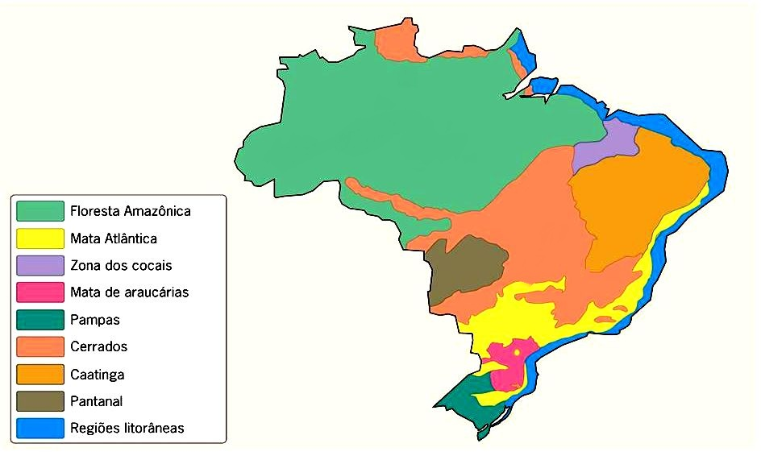
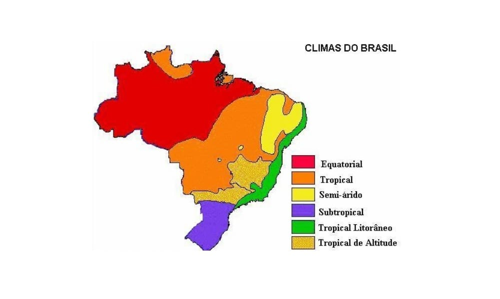

O tipo de vegetação de determinada região irá depender, primordialmente, do seu tipo de clima. Entretanto, essa regra aplica-se somente a vegetações naturais ou nativas, pois a formação vegetal é o primeiro elemento da paisagem que o homem modifica e, portanto, está em constante transformação.
O Brasil, por ter dimensões territoriais continentais, abriga oito tipos principais de vegetação natural. São eles:
Floresta Amazônica: de clima equatorial e conhecida como Amazônia Legal, abriga milhões de espécies animais e vegetais, sendo de vital importância ao equilíbrio ambiental do planeta. Ela é classificada como uma formação florestal Latifoliada, pois suas folhas são largas e agrupam-se densamente, geralmente atingindo grandes alturas.
Mata Atlântica: caracterizada como uma floresta latifoliada tropical e de clima tropical úmido, foi a vegetação que mais sofreu devastação no Brasil, restando apenas 7% de sua cobertura original. Era uma vegetação que se estendia do Rio Grande do Norte ao Rio Grande do Sul, mas que foi intensamente degradada pelos portugueses para a extração de madeira e plantio de cana-de-açúcar.
Caatinga: é uma vegetação típica de clima semiárido, localizada no Nordeste brasileiro. Possui plantas espinhosas e pobres em nutrientes. Nos últimos anos, vem sofrendo diversas agressões ambientais que causam empobrecimento do solo, dificultando mais ainda o desenvolvimento dessa região.
Cerrado: típica do Planalto Central brasileiro e de clima tropical semiúmido, é a segunda maior formação vegetal do Brasil. Apesar de sua paisagem ser composta por árvores baixas e retorcidas, é a vegetação com maior biodiversidade do planeta. Somente nos últimos anos é que os ambientalistas vêm se preocupando com esse ecossistema, que sofre vários danos ambientais causados pela plantação de soja e cana-de-açúcar e pela pecuária.
Pantanal: localizada no Mato Grosso e Mato Grosso do Sul, é considerada uma vegetação de transição, isto é, uma formação vegetal heterogênea composta por diferentes ecossistemas. Em determinadas épocas do ano, algumas porções de área são alagadas pelas cheias dos rios e é somente nas estiagens que a vegetação se desenvolve.
Campos sulinos: também conhecidos como “pampas” e característicos de clima subtropical, apresentam vegetação rasteira com a predominância de capins e gramíneas.
Mata de Araucária: com a predominância de pinheiros e localizada no estado do Paraná, é uma vegetação típica de clima subtropical. Sua cobertura original é quase inexistente em razão da intensa exploração de madeira para fabricação de móveis.
Mangues: é um tipo de vegetação de formação litorânea, caracterizado principalmente por abranger diversas vegetações, ocorrendo em áreas baixas e, logo, sujeito à ação das marés.

Clima corresponde ao conjunto de variações do tempo de uma determinada localidade. Para estabelecer o clima de um lugar é necessário analisar os fenômenos atmosféricos durante um período de, aproximadamente, 30 anos. O clima está diretamente relacionado à formação vegetal.
No território brasileiro ocorre uma grande diversidade climática, pois o país apresenta grande extensão territorial com diferenças de relevo, altitude e dinâmica das massas de ar e das correntes marítimas, todos esses fatores influenciam no clima de uma região.
A maior parte da área do Brasil está localizada na Zona Intertropical, ou seja, nas zonas de baixas latitudes, com climas quentes e úmidos. Outro fator interessante do clima brasileiro refere-se à amplitude térmica (diferença entre as médias anuais de temperatura máximas e mínimas), conforme se aproxima da linha do Equador, a amplitude térmica é menor.
O critério utilizado no Brasil para classificar os diferentes tipos de clima relaciona-se à origem, natureza e, principalmente, movimentação das massas de ar existentes no país (equatoriais, tropicais e polares). Conforme análises climáticas realizadas no território brasileiro, foi possível estabelecer seis tipos de climas diferentes, são eles:
Equatorial: Presente na Amazônia, ao norte de Mato Grosso e a oeste do Maranhão, sofre ação direta das massas de ar equatorial continental e equatorial atlântica, de ar quente e úmido. Apresenta temperaturas médias elevadas (de 25 °C a 27 °C), chuvas durante todo o ano e reduzida amplitude térmica (inferior a 3 °C).
Tropical: Clima do Brasil central, também presente na porção oriental do Maranhão, extensa parte do território do Piauí, na porção ocidental da Bahia e de Minas Gerais, além de ser encontrado também no extremo norte do país, em Roraima. Caracteriza-se por temperatura elevada (18 °C a 28 °C), com amplitude térmica de 5 °C a 7 °C, e estações bem definidas (uma chuvosa e outra seca). A estação de chuva ocorre no verão; no inverno ocorre a redução da umidade relativa em razão do período da estação seca. O índice pluviométrico é de cerca de 1,5 mil milímetros anuais.
Tropical de Altitude: É encontrado nas partes mais elevadas, acima de 800 metros, do planalto Atlântico do Sudeste. Abrange principalmente os estados de São Paulo, Minas Gerais, Rio de Janeiro e Espírito Santo. Está sob influência da massa de ar tropical atlântica, que provoca chuvas no período do verão. Apresenta temperatura amena, entre 18 °C e 22 °C, e amplitude térmica anual entre 7 °C e 9 °C. No inverno, as geadas ocorrem com certa frequência, em virtude da ação das frentes frias originadas do choque entre as massas tropical e polar.
Tropical Atlântico: Conhecido também como tropical úmido, compreende a faixa litorânea do Rio Grande do Norte ao Paraná. Sofre a ação direta da massa tropical atlântica, que, por ser quente e úmida, provoca chuvas intensas. A temperatura varia de 18 °C a 26 °C, apresenta amplitude térmica maior à medida que se avança em direção ao Sul. No Nordeste, a maior concentração de chuva ocorre no inverno, já no Sudeste, ocorre no verão. O índice pluviométrico médio é alto, de 2 mil milímetros anuais.
Subtropical: Ocorre nas latitudes abaixo do trópico de Capricórnio. Está presente no sul do estado de São Paulo e na maior parte do Paraná, Santa Catarina e Rio Grande do Sul. É influenciado pela massa polar atlântica, possui temperatura média anual de 18 °C e amplitude térmica elevada (10 °C). As chuvas não são muito intensas, mil milímetros anuais, porém, ocorrem de forma bem distribuída na região. Nessa região climática do Brasil são comuns as geadas e nevadas. O verão é muito quente e a temperatura pode ultrapassar os 30 °C. O inverno, bastante frio, apresenta as temperaturas mais baixas do país, inferiores a 0 °C.
Semiárido: Ocorre no interior do Nordeste, na região conhecida como Polígono das Secas. Corresponde a quase todo o sertão nordestino e aos vales médio e inferior do rio São Francisco. Caracteriza-se por temperaturas elevadas (média de 27 °C) e chuvas escassas e mal distribuídas, em torno de 700 milímetros anuais. Há períodos em que a massa equatorial atlântica (superúmida) chega ao litoral norte da região Nordeste e atinge o sertão, causando chuvas intensas nos meses de fevereiro, março e abril.
